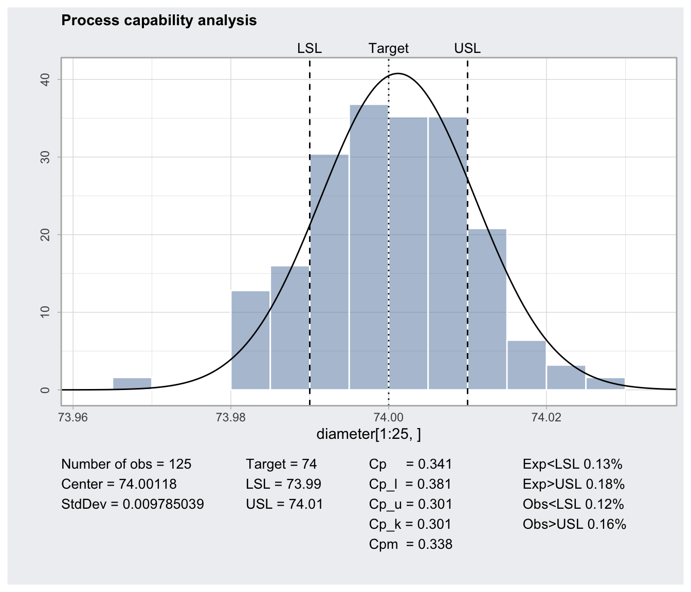

processCapability.RdComputes process capability indices for a 'qcc' object of type "xbar" and plot the histogram.
processCapability(object, spec.limits, target,
std.dev, nsigmas,
confidence.level = 0.95, ...)
# S3 method for class 'processCapability'
print(x, digits = getOption("digits"), ...)
# S3 method for class 'processCapability'
plot(x,
add.stats = qcc.options("add.stats"),
breaks = nclass.scott,
fill = adjustcolor(qcc.options("zones")$fill, alpha.f = 0.5),
color = "white", title, xlab,
digits = getOption("digits"), ...)a 'qcc' object of type "xbar"
a two-values vector specifying the lower and upper specification limits. For one-sided specification limits, the value of the missing limit must be set to NA.
a value specifying the target of the process. If missing the value from the 'qcc' object is used if not NULL, otherwise the target is set at the middle value between specification limits.
a value specifying the within-group standard deviation. If not provided is taken from the 'qcc' object.
a numeric value specifying the number of sigmas to use. If not provided is taken from the 'qcc' object.
a numeric value between 0 and 1 specifying the level to use for computing confidence intervals.
an object of class 'processCapability'.
a logical value indicating whether statistics and capability indices should be added at the bottom of the chart.
a value or a function used to select the number of bins in a histogram. See the help for nclass.scott for more details.
values specifying the colour of the filled area and the border used for drawing the histogram.
a character string specifying the plot title. Set title = NULL to remove the title.
a character string specifying the label for the x-axis.
the number of significant digits to use.
catches further ignored arguments.
This function calculates confidence limits for \(C_p\) using the method described by Chou et al. (1990). Approximate confidence limits for \(C_{pl}\), \(C_{pu}\) and \(C_{pk}\) are computed using the method in Bissell (1990). Confidence limits for \(C_{pm}\) are based on the method of Boyles (1991); this method is approximate and it assumes that the target is midway between the specification limits.
Invisibly returns a list with components:
number of observations
center
standard deviation
target
a vector of values giving the lower specification limit (LSL) and the upper specification limit (USL)
a matrix of capability indices (\(C_p\), \(C_{pl}\), \(C_{pu}\), \(C_{pk}\), \(C_{pm}\)) and the corresponding confidence limits.
a vector of values giving the expected fraction, based on a normal approximation, of the observations less than LSL and greater than USL.
a vector of values giving the fraction of observations less than LSL and greater than USL.
Bissell, A.F. (1990) How reliable is your capability index?, Applied Statistics, 39, 331-340.
Boyles, R.A. (1991) The Taguchi capability index, Journal of Quality Technology, 23, 107-126.
Chou, Y., Owen D.B. and Borrego S.A. (1990) Lower Confidence Limits on Process Capability Indices, Journal of Quality Technology, 22, 223-229.
Montgomery, D.C. (2013) Introduction to Statistical Quality Control, 7th ed. New York: John Wiley & Sons.
Wetherill, G.B. and Brown, D.W. (1991) Statistical Process Control. New York: Chapman & Hall.
data(pistonrings)
diameter = qccGroups(data = pistonrings, diameter, sample)
q = qcc(diameter[1:25,], type="xbar", nsigmas=3)
pc = processCapability(q, spec.limits=c(73.95,74.05))
pc
#> ── Process Capability Analysis ───────────────────
#>
#> Number of obs = 125 Target = 74
#> Center = 74.00118 LSL = 73.95
#> StdDev = 0.009785039 USL = 74.05
#>
#> Capability indices Value 2.5% 97.5%
#> Cp 1.70 1.49 1.91
#> Cp_l 1.74 1.55 1.93
#> Cp_u 1.66 1.48 1.84
#> Cp_k 1.66 1.45 1.88
#> Cpm 1.69 1.48 1.90
#>
#> Exp<LSL 0% Obs<LSL 0%
#> Exp>USL 0% Obs>USL 0%
plot(pc)
plot(processCapability(q, spec.limits=c(73.95,74.05), target=74.02))
plot(processCapability(q, spec.limits=c(73.99,74.01)))

plot(processCapability(q, spec.limits = c(73.99, 74.1)))